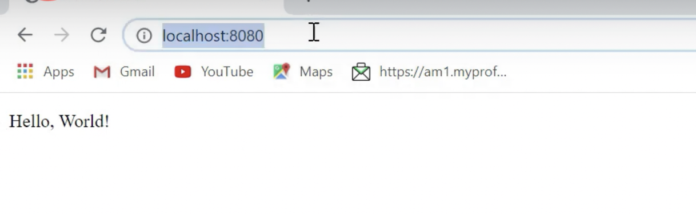

In this tutorial, we will learn what is @Controller and how to use it in Spring Boot web applications.
The @Controller annotation is used in Spring MVC to mark a class as a
controller component. It acts as a
request handler and handles incoming HTTP requests, performing the necessary processing and returning a
response.
Controllers in Spring MVC are responsible for processing user requests, interacting with business logic or services, and returning a view or response to the client.
Let's use Spring Boot to develop a simple web application.
Add the following Maven dependencies to your Spring boot application:
<dependency>
<groupId>org.springframework.boot
<artifactId>spring-boot-starter-thymeleaf
</dependency>
<dependency>
<groupId>org.springframework.boot
<artifactId>spring-boot-starter-web
</dependency>
The spring-boot-starter-web starter is responsible for setting up the
web-related components and
configurations in a Spring Boot application. It includes the necessary dependencies and auto-configurations
to develop web applications using Spring MVC.
The spring-boot-starter-thymeleaf starter includes the Thymeleaf templating
engine for server-side rendering
of views. Thymeleaf is a popular Java-based templating language that enables the creation of dynamic web
pages.
By including the spring-boot-starter-web and spring-boot-starter-thymeleaf starters in your
Spring Boot project, you can quickly set up a web application with the necessary web infrastructure, request
handling
capabilities, and Thymeleaf templating support. These starters simplify the configuration process and
provide a solid foundation for building modern, scalable, and interactive web applications using Spring
Boot.
Next, create a class and annotate it with @Controller:
import org.springframework.stereotype.Controller;
import org.springframework.ui.Model;
import org.springframework.web.bind.annotation.GetMapping;
import org.springframework.web.bind.annotation.RequestParam;
@Controller
public class HelloController {
@GetMapping({
"/",
"/hello"
})
public String hello(@RequestParam(value = "name",
defaultValue = "World", required = true) String name, Model model) {
model.addAttribute("name", name);
return "hello";
}
}
In the example above, the HelloController class is annotated with @Controller. The @GetMapping annotation is
used to map the /hello and / URL paths to
the home method, which returns a view name "hello". When a user
visits the /hello URL, this method is executed and the associated view is
rendered.
Spring boot will auto-configure the view resolver for Thymeleaf whenever it will find the
spring-boot-starter-thymeleaf dependency on the classpath. Spring boot will
pick Thymeleaf templates (HTML
pages) from the resources/templates folder.
Next, let's create a Thymeleaf template hello.html under /resources/templates folder and add the following code to it:
<!DOCTYPE html>
<html>
<head>
<meta charset="ISO-8859-1">
<title>Insert title here
</head>
<body>
<p th:text="'Hello, ' + ${name} + '!'" />
</body>
</html>
In the above code, th:text Thymeleaf attribute specifies that the content of
the paragraph should be set
using Thymeleaf's text substitution feature.
"Hello, ' + ${name} + '!'": This Thymeleaf expression concatenates the string "Hello, " with the value
of the
${name} variable and then appends "!" at the end. The ${name} variable is expected to be passed as a model
attribute when rendering the template. The result of this expression will be dynamically inserted into the
paragraph element when the page is rendered, displaying a personalized greeting message.
Next, let's run the Spring boot application and see the result in the browser:
Root URL: http://localhost:8080/
The /hello?Ramesh URL: http://localhost:8080/hello?Ramesh
The @Controller annotation is a fundamental building block of Spring MVC, allowing developers to create web applications and handle HTTP requests with ease. By using the @Controller annotation, you can define request mapping methods and build flexible, modular, and maintainable web applications using the Spring Framework.